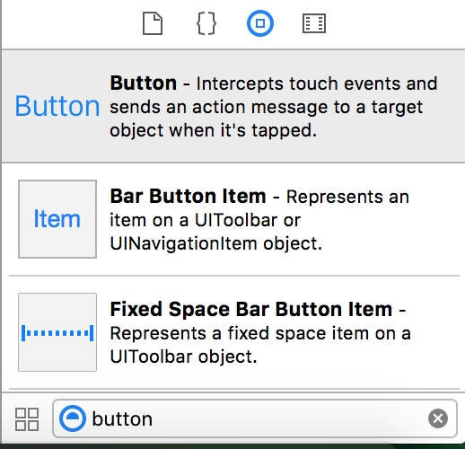
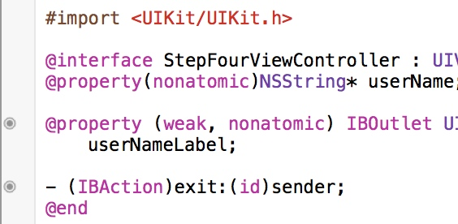

iOS的应用程序是运行在沙盒中的，也就是说各个应用无法访问除自己外的其它应用的地址。
接下来，我将对iOS开发中常用的组件NSButton，NSImage，NSLabel做一个总结。
Xcode提供了Interface Builder来方便快速地创建应用界面。

我们可以将想要的控件从这里拖到view上，完成添加。
通过Outlet插座，按住Ctrl+控件拖拽到对应的ViewController的.h文件中可以将IB中的组件添加到代码里，方便代码的操作。包括添加属性(IBOutlet)和相应方法(IBAction)。

通过代码添加控件
把控件加入页面view[self.view addSubview:(UIView)]
1 这个方法会retain一次view，并且设置它的下一个响应者是receiver，即它的新的父视图。
2 每一个视图只能有唯一的一个父视图。如果当前操作视图已经有另外的一个父视图，则addsubview的操作会把它先从上一个父视图中移除（包括响应者链），再加到新的父视图上面。
UILabel
1 建立UILabel *label = [[UILabel alloc]initWithFrame:CGRectMake(x, y, width, height)];
2
3 常用属性 //设置显示文字
4 label.text = @"label1";
5 //设置字体:粗体，正常的是 SystemFontOfSize
6 label.font = [UIFont boldSystemFontOfSize:20];
7 //设置文字颜色
8 label.textColor = [UIColor orangeColor];
9 //设置文字排版方式
10 label.textAlignment = UITextAlignmentRight;
11 label.textAlignment = UITextAlignmentCenter;
12 //设置字体大小适应label宽度
13 label.adjustsFontSizeToFitWidth = YES;
14 //设置label的显示行数
15 label.numberOfLines = 2;
16 //背景色，也可以设置背景图
17 label.backgroundColor=[UIColor clearColor]; //可以去掉背景色
18 //设置高亮
19 label.highlighted = YES;
20 label.highlightedTextColor = [UIColor orangeColor];
21 //设置阴影
22 label.shadowColor = [UIColor redColor];
23 label.shadowOffset = CGSizeMake(1.0,1.0);
24 //设置是否能与用户进行交互
25 label.userInteractionEnabled = YES;
26 //设置label中的文字是否可变，默认值是YES
27 label.enabled = NO;
28 //设置文字过长时的显示格式
29 label.lineBreakMode = UILineBreakModeMiddleTruncation;//截去中间
30 // typedef enum {
31 // UILineBreakModeWordWrap = 0,
32 // UILineBreakModeCharacterWrap,
33 // UILineBreakModeClip,//截去多余部分
34 // UILineBreakModeHeadTruncation,//截去头部
35 // UILineBreakModeTailTruncation,//截去尾部
36 // UILineBreakModeMiddleTruncation,//截去中间
37 // } UILineBreakMode;
38
UIButton
1 建立 //UIButton的定义
2 UIButton *button=[[UIButton buttonWithType:(UIButtonType);
3 //typedef enum {
4 // UIButtonTypeCustom = 0, 自定义风格
5 // UIButtonTypeRoundedRect, 圆角矩形
6 // UIButtonTypeDetailDisclosure, 蓝色小箭头按钮，主要做详细说明用
7 // UIButtonTypeInfoLight, 亮色感叹号
8 // UIButtonTypeInfoDark, 暗色感叹号
9 // UIButtonTypeContactAdd, 十字加号按钮
10 //} UIButtonType;
11
12 常用方法//设置frame
13 button.frame = CGRectMake(20, 20, 280, 40);
14 [button setFrame:CGRectMake(20,20,50,50)];
15
16 //button背景色
17 button.backgroundColor = [UIColor clearColor];
18 [button setBackgroundColor:[UIColor blueColor]];
19
20 //是否可点击，默认为YES
21 button.enable = NO;
22 //设置button填充图片和背景图片
23 [button setImage:(UIImage) forState:UIControlStateNormal];
24 [button setBackgroundImage:(UIImage)forState:UIControlStateNormal];
25 //设置button标题和标题颜色
26 [button1 setTitle:@"点击" forState:UIControlStateNormal];
27 [button setTitleColor:[UIColor redColor] forState:UIControlStateNormal];
28
29 //添加或删除事件处理
30 [button addTarget:self action:@selector(butClick:)forControlEvents:UIControlEventTouchUpInside];
31 [button removeTarget:nil action:nil forControlEvents:UIControlEventTouchUpInside];
32
UIImageView
1 建立UIImageView *imageView = [[UIImageView alloc ] init];
2 //UIImage加载有两种方式
3 //方案1
4 UIImage *image = [UIImage imageNamed:@"image_photo"];
5 //方案2
6 NSString *filePath=[[NSBundle mainBundle] pathForResource:@"image_photo" ofType:@"jpg"];
7 UIImage *image=[UIImage imageWithContentsOfFile:filePath];
8
9 imageView.image = image;
10
方案一：用imageNamed的方式加载时，系统会把图像Cache到内存。如果图像比较大，或者图像比较多，用这种方式会消耗很大的内存，而且释放图像的内存是一件相对来说比较麻烦的事情。例如：如果利用imageNamed的方式加载图像到一个动态数组NSMutableArray，然后将将数组赋予一个UIView的对象的animationImages进行逐帧动画，那么这将会很有可能造成内存泄露。并且释放图像所占据的内存也不会那么简单。但是利用imageNamed加载图像也有自己的优势。对于同一个图像系统只会把它Cache到内存一次，这对于图像的重复利用是非常有优势的。例如：你需要在一个TableView里重复加载同样一个图标，那么用imageNamed加载图像，系统会把那个图标Cache到内存，在Table里每次利用那个图像的时候，只会把图片指针指向同一块内存。这种情况使用imageNamed加载图像就会变得非常有效。方案二：就是每次单独加载图片，系统不缓存。使用完后记得释放。
1 常用方法 //设置圆角
2 imageView.layer.masksToBounds = YES;
3 imageView.layer.cornerRadius = 10;
4
5 //设置边框颜色和大小
6 imageView.layer.borderColor = [UIColor orangeColor].CGColor;
7 imageView.layer.borderWidth = 2;
8
9 //播放一系列图片
10 UIImage *image1 = [UIImage imageNamed:@"1"];
11 UIImage *image2 = [UIImage imageNamed:@"2"];
12 UIImage *image3 = [UIImage imageNamed:@"3"];
13 NSArray *imagesArray = @[image1,image2,image3];
14 imageView.animationImages = imagesArray;
15 // 设定所有的图片在多少秒内播放完毕
16 imageView.animationDuration = [imagesArray count];
17 // 重复播放多少遍，0表示无数遍
18 imageView.animationRepeatCount = 0;
19 // 开始播放
20 [imageView startAnimating];
21
22 //为图片添加单击事件：一定要先将userInteractionEnabled置为YES，这样才能响应单击事件
23 imageView.userInteractionEnabled = YES;
24 UITapGestureRecognizer *singleTap = [[UITapGestureRecognizer alloc] initWithTarget:self action:@selector(tapImageView:)];
25 [imageView addGestureRecognizer:singleTap];
26
27 //其他设置
28 imageView.hidden = YES或者NO; // 隐藏或者显示图片
29 imageView.alpha =0.5; // 设置透明度
30 // 设置高亮时显示的图片
31 imageView.highlightedImage = (UIImage *)hightlightedImage;
32 imageView.image = (UIImage *)image; // 设置正常显示的图片
UITextField
1 建立UITextField* textField = [[UITextField alloc] initWithFrame:CGRectMake(x, y, width, height)];
2
3 常用方法textField setBorderStyle:UITextBorderStyleRoundedRect]; //外框类型
4 textField.placeholder = @"password"; //默认显示的字
5 textField.secureTextEntry = YES; //密码
6
7 textField.autocorrectionType = UITextAutocorrectionType; //设置是否自动纠错
8 typedef enum {
9 UITextAutocorrectionTypeDefault, //默认
10 UITextAutocorrectionTypeNo, //不自动纠错
11 UITextAutocorrectionTypeYes, //自动纠错
12 }UITextAutocorrectionType;
13
14 textField.clearButtonMode = UITextFieldViewMode; //编辑时会出现个修改X
15 typedef enum {
16 UITextFieldViewModeNever, //重不出现
17 UITextFieldViewModeWhileEditing, //编辑时出现
18 UITextFieldViewModeUnlessEditing, //除了编辑外都出现
19 UITextFieldViewModeAlways //一直出现
20 }UITextFieldViewMode;
21
22 //可以在UITextField使用下面方法，按return键返回
23 -(IBAction) textFieldDone:(id) sender
24 {
25 [textFieldName resignFirstResponder];
26 }
27 //链接TextField控件的"Did end on exit"
28
29 //再次编辑就清空
30 textField.clearsOnBeginEditing = YES;
31
32 //设置键盘样式
33 textField.keyboardType = UIKeyboardType;
34 typedef enum {
35 UIKeyboardTypeDefault, //默认键盘，支持所有字符
36 UIKeyboardTypeASCIICapable, //支持ASCII的默认键盘
37 UIKeyboardTypeNumbersAndPunctuation, //标准电话键盘，支持＋＊＃字符
38 UIKeyboardTypeURL, //URL键盘，支持.com按钮 只支持URL字符
39 UIKeyboardTypeNumberPad, //数字键盘
40 UIKeyboardTypePhonePad, //电话键盘
41 UIKeyboardTypeNamePhonePad, //电话键盘，也支持输入人名
42 UIKeyboardTypeEmailAddress, //用于输入电子邮件地址的键盘
43 UIKeyboardTypeDecimalPad, //数字键盘有数字和小数点
44 UIKeyboardTypeTwitter, //优化的键盘，方便输入@、#字符
45 UIKeyboardTypeAlphabet = UIKeyboardTypeASCIICapable,
46 }UIKeyboardType;
47
48 //return键样式
49 text.returnKeyType =UIReturnKeyType;
50 typedef enum {
51 UIReturnKeyDefault, 默认 灰色按钮，标有Return
52 UIReturnKeyGo, 标有Go的蓝色按钮
53 UIReturnKeyGoogle,标有Google的蓝色按钮，用语搜索
54 UIReturnKeyJoin,标有Join的蓝色按钮
55 UIReturnKeyNext,标有Next的蓝色按钮
56 UIReturnKeyRoute,标有Route的蓝色按钮
57 UIReturnKeySearch,标有Search的蓝色按钮
58 UIReturnKeySend,标有Send的蓝色按钮
59 UIReturnKeyYahoo,标有Yahoo的蓝色按钮
60 UIReturnKeyYahoo,标有Yahoo的蓝色按钮
61 UIReturnKeyEmergencyCall, 紧急呼叫按钮
62 } UIReturnKeyType;